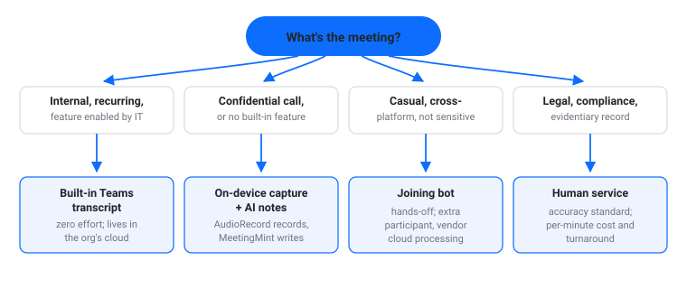
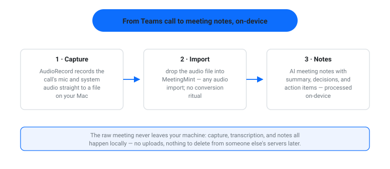
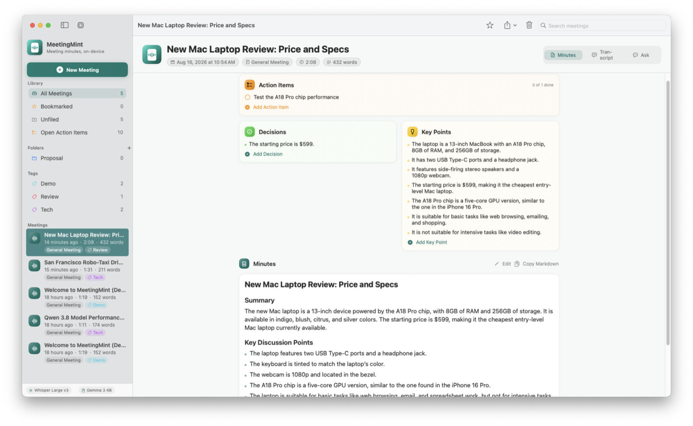

Teams Meeting Transcription: 4 Ways That Work (2026)
A Teams meeting is where decisions happen and then evaporate. Someone remembers the action items one way, someone else remembers them another way, and the meeting recording sits unwatched in a channel. That’s the problem a transcript solves: searchable text of who said what, minutes you don’t have to write by hand.
If you’re on a Mac and looking for Teams meeting transcription options in 2026, there are four that actually work — Teams’ built-in transcript, recording the call and transcribing it on your own machine, a bot that joins the call for you, and human transcription services. They differ sharply on privacy, cost, and how much you trust the output.

The short answer
- Your plan includes it and IT allows it: Teams’ built-in live transcription is the zero-effort default.
- Confidential meetings, or your plan lacks the feature: record the audio and transcribe it on-device with desktop apps — nothing leaves your Mac.
- Hands-off convenience and the meeting isn’t sensitive: a third-party bot can join and transcribe, at the cost of another participant and cloud processing.
- The transcript is evidence or contractual: human transcription services, slow and paid.
Method 1: Teams’ built-in transcription
Teams can produce a live transcript during the meeting and store it afterwards alongside the recording. Whether you see the option depends on your Microsoft 365 plan, your organization’s admin policies, and the meeting type — IT can enable or disable it centrally. Microsoft’s documentation keeps the current availability details, and they change often enough that it’s worth checking rather than assuming.
When it’s available, it’s the lowest-friction path: the transcript is attributed to speakers, searchable, and lives where the meeting already lives.
Good: organizations already inside Microsoft 365 with the feature enabled; recurring internal meetings.
Trade-off: you don’t control availability (plan + admin policy), and the transcript — like the recording — lives on Microsoft’s cloud under your org’s retention rules. External guests and cross-org meetings are where it gets inconsistent.
Method 2: Record the audio and transcribe on-device
The route that keeps control with you: capture the meeting audio on your Mac, then run transcription locally.
We build both halves. AudioRecord records what your Mac hears — mic and system audio — so it can capture the Teams call itself, not just your voice, and save it to a file. MeetingMint then takes that audio file and produces structured AI meeting notes — summary, decisions, action items — with processing done on-device and nothing uploaded. It imports any audio file; a Teams recording or a clean capture both work.



MeetingMint’s demo: on-device AI meeting minutes — no cloud, no uploads.
This is the only method where the raw meeting never leaves your machine. For client calls, HR conversations, or anything covered by an NDA, that’s the deciding property — the same logic as redacting documents before they touch an AI service, applied to meetings instead.
Good: confidential calls, consultants and researchers, Mac users whose plan lacks built-in transcription, anyone who wants notes, not just a wall of text.
Trade-off: two apps and a manual capture step; you’re responsible for starting the recording (and for following consent rules in your jurisdiction — see the FAQ).
Method 3: A transcription bot joins the meeting
Services like Otter sit in the meeting as a participant and transcribe what they hear. You invite the bot, it posts notes afterwards. Setup is minutes and works across Zoom, Meet, and Teams.
The trade is privacy and polish: a third-party participant is in the call (some clients dislike it), audio is processed in that vendor’s cloud, and free tiers gate features. For an open community meeting it’s fine; for a sensitive one, it’s the same inverted risk as uploading footage to a random web tool — the meetings that most need careful handling are the ones you least want on someone else’s server.
Good: quick setup, cross-platform meetings, non-sensitive calls.
Trade-off: another participant in the call, cloud processing, subscription pricing, variable speaker attribution.
Method 4: Human transcription services
When the transcript itself is the deliverable — legal, compliance, research citations — a human service is the accuracy standard. You upload the recording; a person (or person-plus-software) returns the text with speaker labels and timestamps.
Good: evidentiary or contractual accuracy, poor audio quality, dense technical discussions.
Trade-off: cost and turnaround — hours to days, priced per audio minute. Overkill for routine meeting minutes.
Which Teams meeting transcription method should you use?
| Method | Cost | Private by default | Effort | Best for |
|---|---|---|---|---|
| Built-in Teams transcript | Plan-dependent | No — org cloud | Zero when enabled | Internal recurring meetings |
| On-device capture + AI notes | Free + app prices | Yes — nothing uploaded | Low, manual start | Confidential calls; missing feature |
| Joining bot | Subscription | No — vendor cloud | Minimal | Cross-platform, non-sensitive |
| Human service | Per audio minute | Varies by vendor | Upload + wait | Legal, research, compliance |
If your meetings involve clients, HR matters, or NDA’d material, the on-device row is the only one where the raw audio never leaves your control — AudioRecord for the capture, MeetingMint for the notes.
Privacy: the part most Teams transcription guides skip
A meeting transcript is the most quotable artifact your organization produces. Before picking a method, decide where the audio and the text may live: org cloud (Microsoft), a vendor’s cloud (bots, services), or your machine. The document-world rule applies unchanged — redact PII before sending documents to an LLM — and meetings carry the same PII plus commercial context. Choose the method whose storage location you can defend.
MeetingMint turns any meeting audio into structured AI notes — decisions, action items, summary — with on-device processing and nothing uploaded. See how it works.
FAQ
Does Teams transcribe meetings automatically?
Only if your plan and admin policies allow it, and typically you (or the organizer) start the transcription in the meeting. There’s no guaranteed always-on transcription.
How do I transcribe a Teams meeting on a Mac without the built-in feature?
Capture the call audio — AudioRecord records your Mac’s mic and system audio — then run the file through MeetingMint for AI meeting notes on-device. The result is a transcript-plus-notes without uploading anything.
Is a Teams transcript accurate enough for official minutes?
Good enough as a working record; not for anything evidentiary. Treat built-in and AI transcripts as first drafts — review before circulating — and use a human service when the wording itself matters.
I'm Muhammad Karim — transportation researcher; I build privacy-first, local-first tools: MeetingMint, AudioRecord, Video Redactor, PrivateRedact, Self-Hosted RAG, TunnelMate.